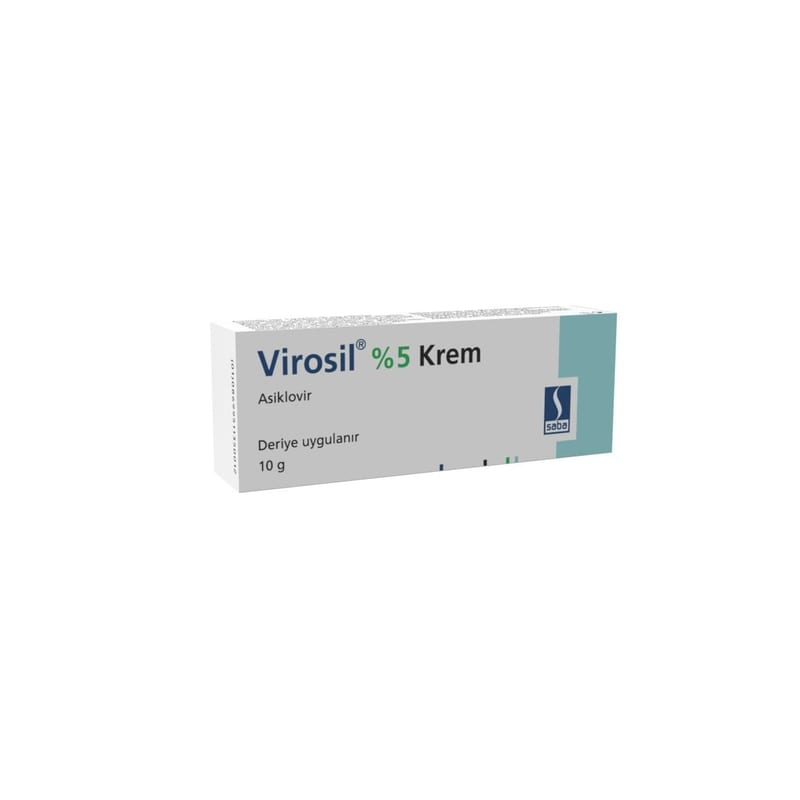

Virosil %5 Krem, 10 g

Ne için kullanılır
KT · Bölüm 1VİROSİL, Herpes simplex (HSV) tip I ve II ile Varicella zoster adlı virüslere karşı etkili antiviral bir ilaçtır.
VİROSİL etken madde olarak asiklovir içerir ve 10 g’lık alüminyum tüp ambalajlar halindedir. VİROSİL, ilk ve tekrarlayan genital Herpes ve Herpes labialis de dahil olmak üzere Herpes simplex deri enfeksiyonlarının (uçuk) tedavisinde kullanılır.